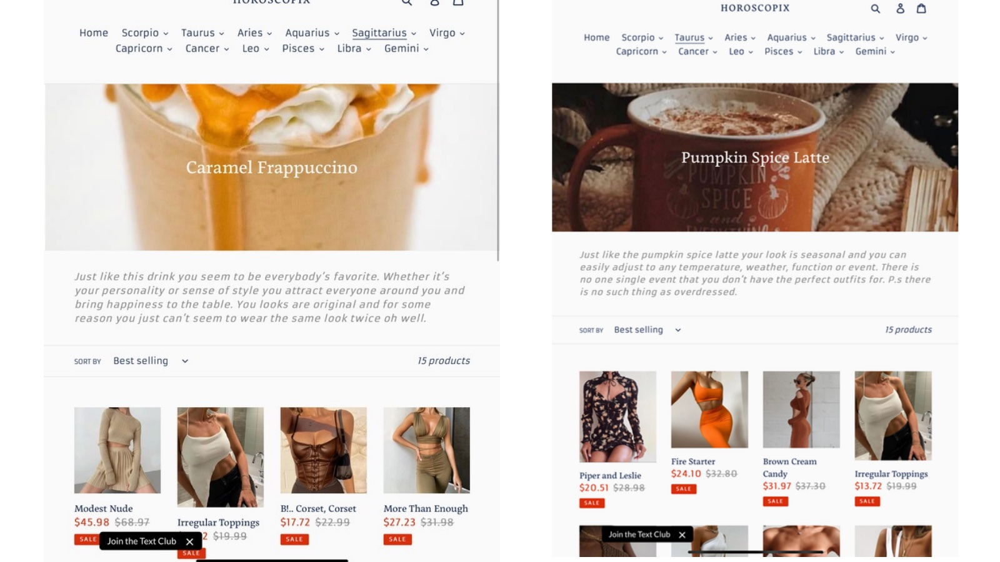
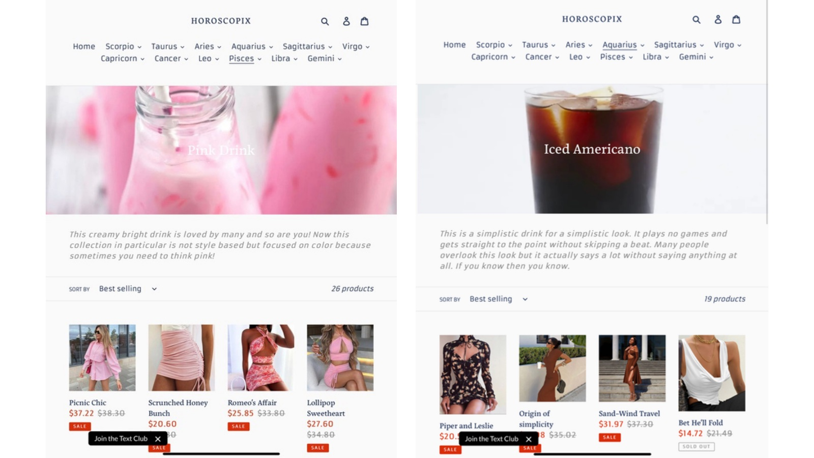
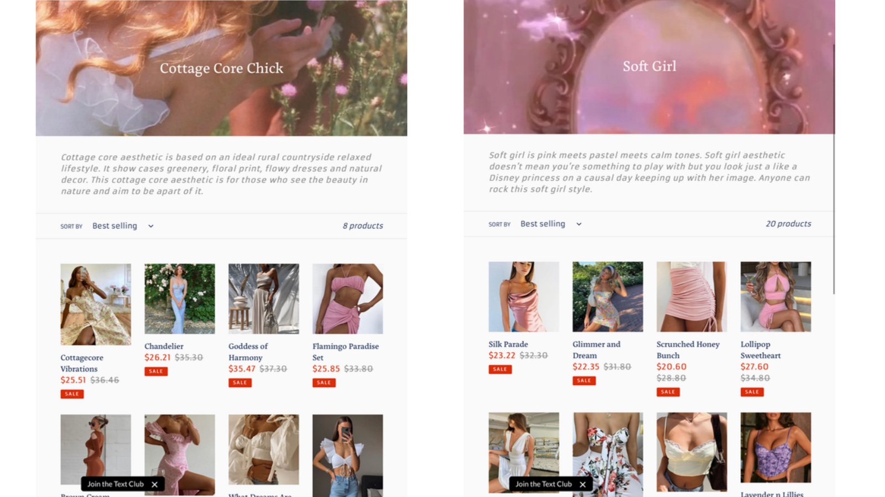
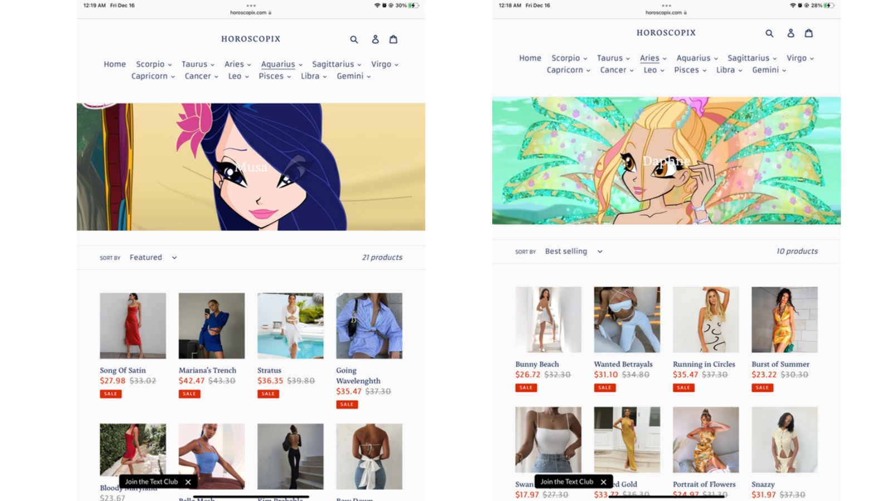
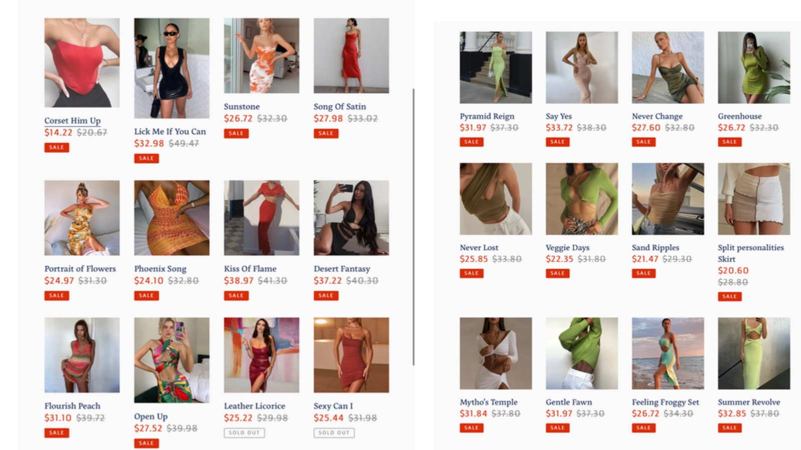

E-Commerce · Brand & Web Design
When I was 16, I built my own online clothing store. Horoscopix let people shop by their style and interests, from favorite drinks to TV characters to personal aesthetic, instead of by clothing item. It was my first self-started project.

Horoscopix was never really about clothes. After COVID, my parents could not cover the remaining balance for my sister's education, and she had to stop her sophomore year at Temple. I could not sit back and do nothing while my family struggled, so at 16 I asked myself a simple question: how hard could it really be to build something of my own? Horoscopix was my answer.
I taught myself to design, build, and run the store while working shifts at Starbucks. It was my first real lesson that a problem worth solving plus enough resolve is usually all you need to begin, and that you do not have to wait for permission to build something that matters.
Most stores make you browse by category: tops, dresses, shoes. Horoscopix flipped that. I believed people shop for who they want to be, so I organized the whole store around style and interests instead. The navigation ran on the zodiac, and the collections were built around the things people actually identify with.
Each collection translated a feeling into a wardrobe. A "Caramel Frappuccino" or "Pumpkin Spice Latte" mood. A soft-girl or cottage-core aesthetic. A favorite character from a show. Every page was its own little world, curated and named to match the vibe rather than the product.




I designed the whole thing: the brand, the layout, the product curation, and the copy. Every page was composed to feel balanced and visually cohesive, because the experience of browsing was as much the product as the clothes were. At 16, this taught me how brand, design, and merchandising come together into one feeling.
The toughest part of Horoscopix was never the design. It was the economics. I ran the store on a dropshipping model, where suppliers ship orders straight to the customer. It kept my startup costs low, but it came with real problems I had to figure out on the fly.
Most items shipped from China with long lead times, so I could not receive them myself to quality-check, brand, and reship. I had to rely on suppliers I could not inspect.
Sourcing from overseas was already expensive, which made it hard to set a price that earned a real margin while still feeling fair to customers.
Juggling suppliers, orders, shipping times, and customer expectations across a long supply chain was a constant balancing act.
It taught me early that a good-looking product still fails without a working business model, honest unit economics, and logistics behind it. That is a lesson I carry straight into product work today.
Horoscopix was my first self-started venture, the moment I learned I could have an idea and build the entire thing myself. It is what set me on the path toward design, and it is why I still gravitate to projects where I get to own the concept, the look, and the experience end to end.